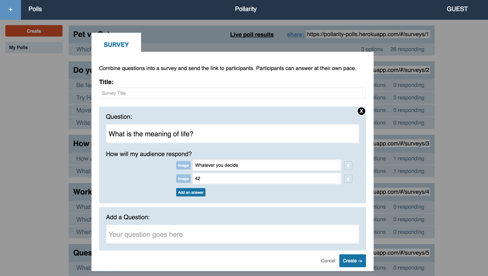
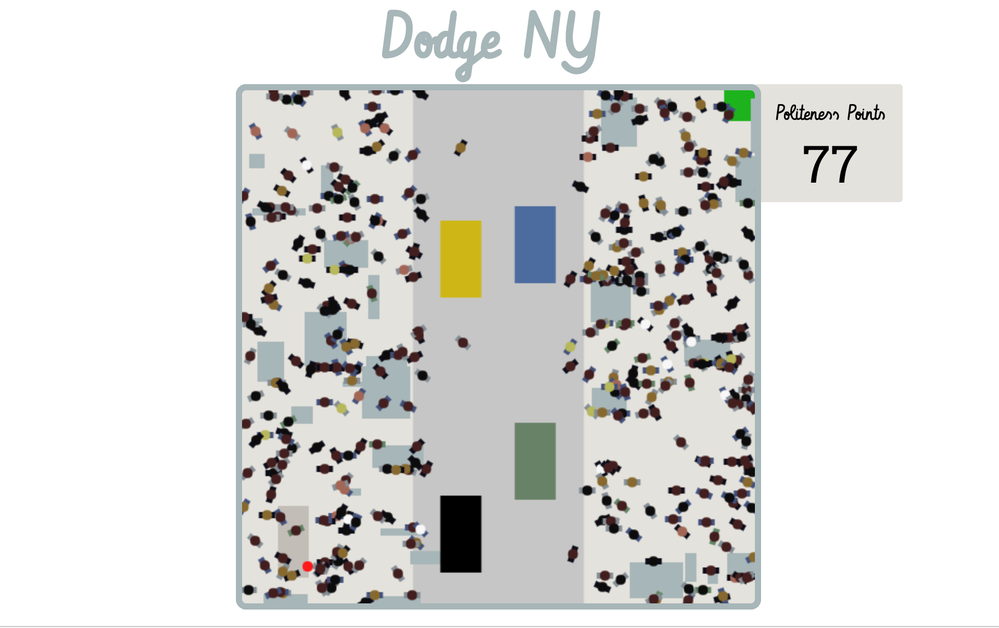
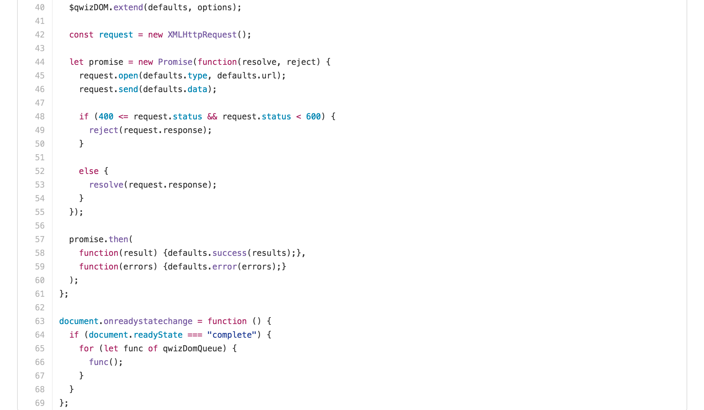

Pollarity is a single-page web app built in Ruby on Rails
and JavaScript using React.js, featuring:
-
Postgres database with complex associations at
the model level (Rails). React.js frontend, using Flux to
govern the flow of data between database and
views/components.
-
Poll-creation component that automatically
generates question components on change
event. Integrated Cloudinary API permits image uploads
as a supplement or replacement for plain-text answers.
-
Poll response components that fire an
AJAX request on click to create, update, or
remove a vote. Intuitive UI with instant visual
feedback: click once to vote (create); click again
to deselect (delete); click another answer to
change your vote (update).
-
Live poll results, made possible by WebSockets using
Pusher. A Response
Store component listens for survey-specific events published
by the Responses Controller on create, update, or delete.
Changes in the store trigger registered callbacks to
instantly update the survey report.
Pollarity was inspired by Poll Everywhere.

Dodge NY is a browser game written in JavaScript. Features:
-
JavaScript using JQuery, rendering on
layered HTML5 canvases. A background canvas
draws the sidewalk one time per pageload. Obstacles and
people are drawn on the top canvas at 200 frames per second.
-
A simple algorithm to simulate crowd movement. "People" characters
steer away from obstacles and avoid the road. Jostling crowds nudge
the player in random directions, frustrating their intentions and
knocking points off the politeness score. Cars run vertically on a
partly-randomized timer. Player charater's speed increases while
walking in the road and returns to normal on regaining
the sidewalk.

qwizDOM is a lightweight DOM manipulation library.
Features:
-
Packages HTML elements into an object for which methods
provided to modify all nodes in the collection.
Allows user to
find and/or remove nodes that match a given selector;
retrieve all parents or children; empty innerHTML;
append an HTML element, nodes from a collection, or
strings to nodes' innerHTML; add or remove classes; and
register or remove event listeners.
-
$qwizDOM method that behaves differently based on input.
Given no input, retrieves all elements on the page.
Given a function, adds the function to a queue and
for execution on page load. Given an HTML element,
returns a packaged version of that element.
-
$qwizDOM.ajax method to send AJAX requests, allowing
callbacks on success and failure (HTTP status other than
200). Creates promises to handle the resulting response.
-
Sandbox HTML page to test quizDOM and DomNodes methods.
